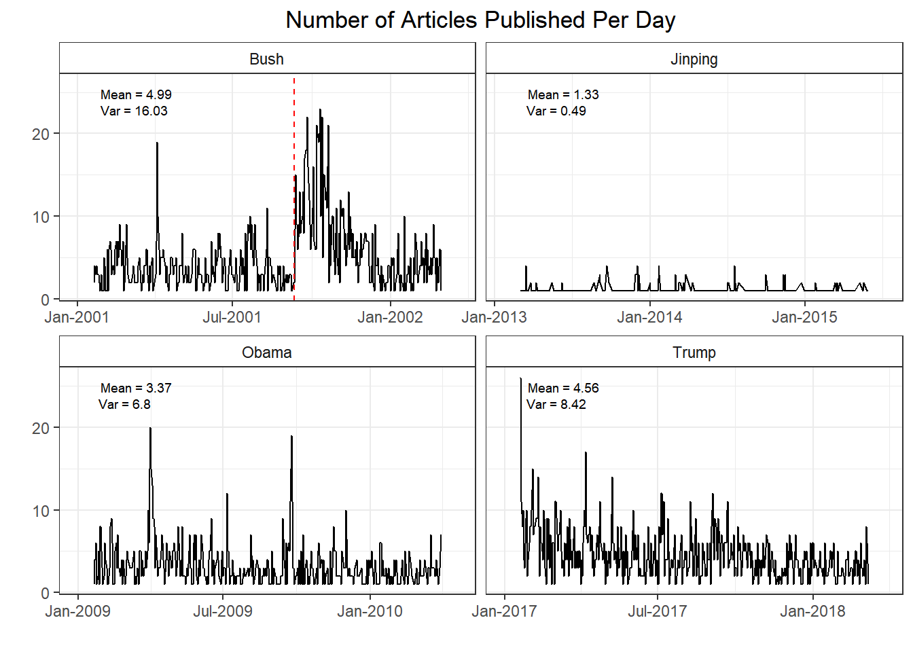
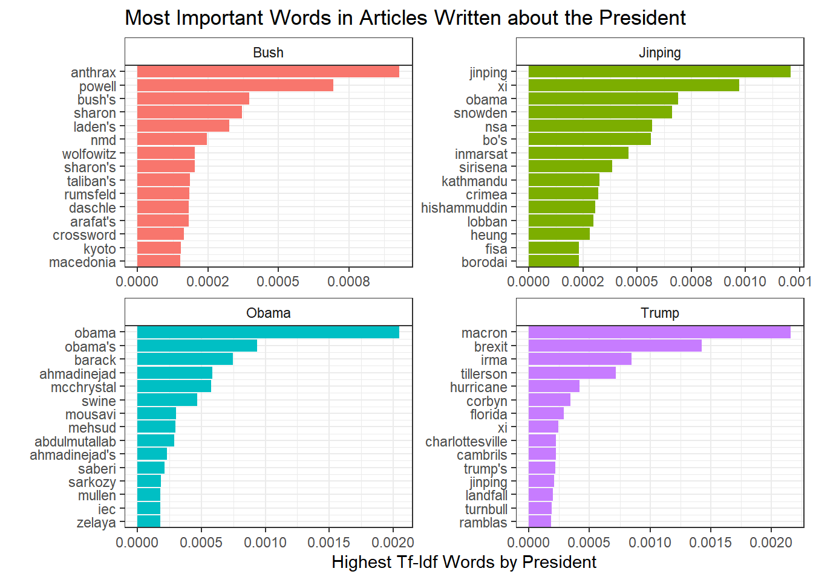
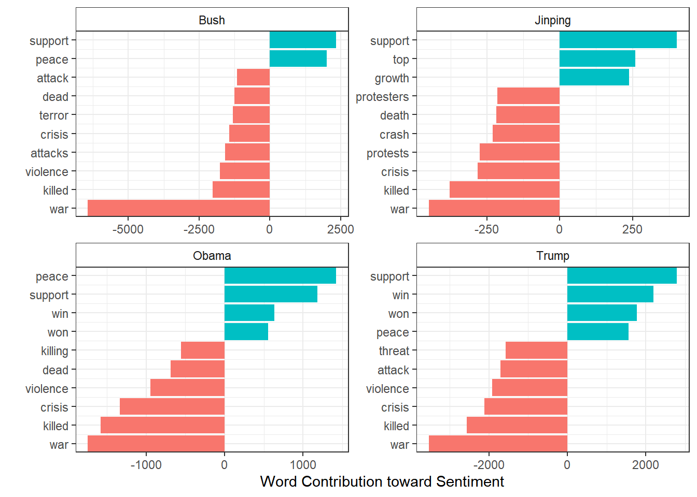
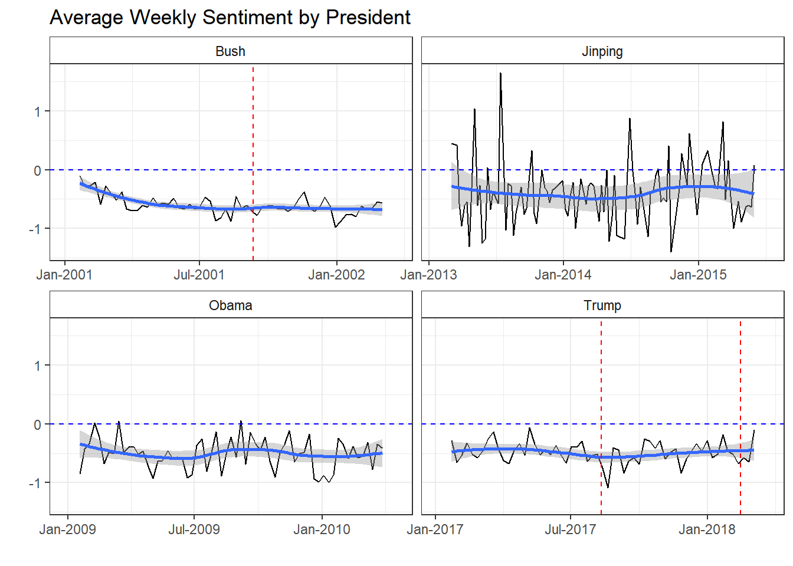
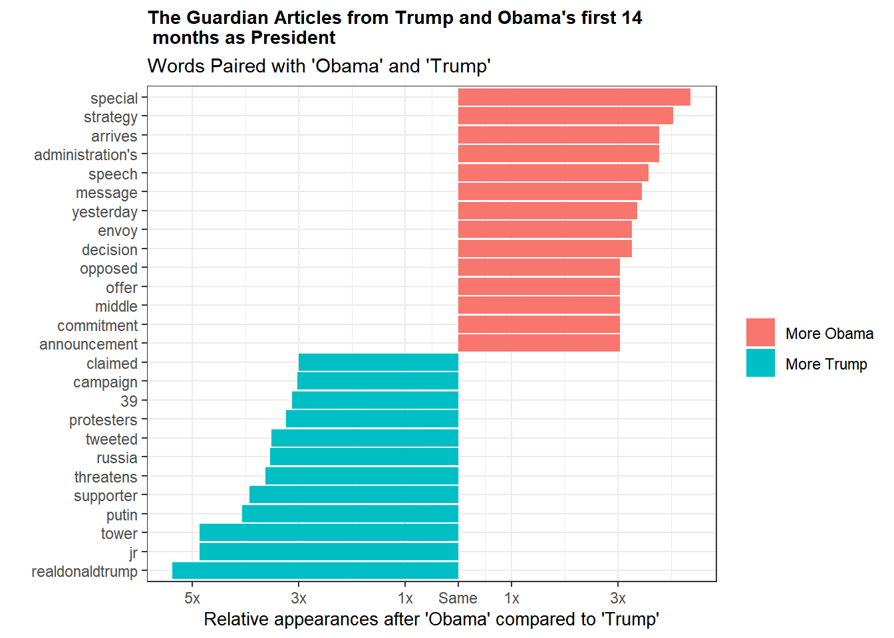

Do you live under a rock? If not, you’ve noticed that Donald Trump became president last year. No matter your feelings on the subject, most people would probably agree that seemingly everywhere you look there is a news story about something President Trump has tweeted or said (or not said). To some degree this is expected. The man is the President of the United States and his actions and decisions are news. But something about how he is covered by the media felt different to me. Has presidential news coverage always been like this or is this president unique and the media coverage adapted in response?
The scientist in me immediately recognized this as an opportunity. Maybe I could quantify the media coverage of Trump and see if it differs from past presidents? This sounded like a perfect opportunity to do some text analysis and as luck would have it, I’ve been learning the in’s and out’s of David Robinson and Julia Silge’s tidytext package.
In this post, I’ll use tidytext to perform text analysis on presidential news articles to see if I can detect any difference in the way Trump is covered by the media.
Data Collection and Cleaning
Our first task is to figure out what data to use. ‘Media’ is a really broad term. For this analysis, we will stick to news articles written about (specifically, in this case tagged with) Trump and several other presidents. There are a number of newspapers with API’s these days, but most of them have restrictions on the number of articles you can download or they restrict you to headlines/summaries. Luckily, The Guardian, a British newspaper, has a great API that lets you pull down full text articles and they have an archive of articles going back something like 20 years. Obviously, using just one source will lead to biases(I believe The Guardian is a left-of-center publication), so if we were being really rigorous, we’d want to pull articles from multiple sources with counterbalancing biases. That seems like way too much effort for this sort of post. So for now, we just have to recognize that this analysis will be incomplete.
With a data source in hand, we can connect to The Guardian’s API using the GuardianR package. I wrote a simple little function that will pull articles for the given date and keyword. As of the time of this post, Trump has been president for 14 months, so I’m downloading the last 14 months worth of articles with keyword Trump. For comparison, I’m also downloading the first 14 months worth of articles for Obama and Bush’s presidencies as well as the first 14 months of President Jinping of China. Since the data takes a little while to download, I already downloaded the data, but if you want to recreate this post with up-to-date articles, you can just use the procedure below.
Code
# # Function to use for purrr mapping. Grabs one month of post data at a time# # Key: in this case I used president names, but it could be anything really# get_articles <- function(start, key){# data <- get_guardian(keyword = key,# section = 'world',# from.date = start,# to.date = ceiling_date(as.Date(start), 'month') - days(1),# api.key = "your-key")# data# # }# # # Generate the list of dates to query for each name# trump_dates <- seq.Date(as.Date("2016-11-01"), as.Date("2018-03-01"), "month")# obama_dates <- seq.Date(as.Date("2008-11-01"), as.Date("2010-03-01"), "month")# bush_dates <- seq.Date(as.Date("2000-11-01"), as.Date("2003-03-01"), "month")# jinping_dates <- seq.Date(as.Date("2013-03-01"), as.Date("2015-05-01"), "month")# # # Use map2 to grab all articles mentioning trump, obama, bush or jinping during the first# # 14 months of their presidencies# trump_data <- map2(trump_dates, "Trump", get_articles)# obama_data <- map2(obama_dates, "Obama", get_articles)# bush_data <- map2(bush_dates, "Bush", get_articles)# jinping_data <- map2(jinping_dates, "Jinping", get_articles)
Now in it’s raw form, these data files are lists of data frames. That’s not a particularly useful format, so we can go ahead and transform the raw data into data frames and tag them with their president for future use. There’s a good amount of additional cleaning that happens, but the key points are
Removing most of the columns– while useful for other explorations, variables like wordcount or webUrl aren’t doing anything for us here.
Filtering to remove any articles from outside the period of presidency
Removing html tags and features from the body of the articles
Code
# A bunch of cleaning done here. # - selected only the relevant columns# - filtered to the 14 month period at the start of their presidency# - removed html tags from the body of articles themselves# - dealt with weird apostrophe encoding (was showing up as â) by subbing in "'" # in all those appearances# -originally used the extractHTMLStrip from tm.plugin.webming, but# this regex gave the same result and was faster.# -TODO: Still seem to be weird encoding html errors in the main text from the articles# Not sure how to fix yet.keep <-c('id', "webPublicationDate", "body", 'tag')df <-bind_rows(t_df, j_df, o_df, b_df)%>%select(all_of(keep))%>%rename(date = webPublicationDate)%>%mutate(date =as.Date.factor(date))%>%filter((date >='2017-01-20'& tag =='Trump') | (date >='2009-01-20'& tag =='Obama')| (date >='2013-03-01'& tag =='Jinping') | (date >='2001-01-20'& tag =='Bush'))%>%# Messed up my Bush dates for some reason. This fixes the issuefilter(!(date >'2002-03-01'& date <'2004-01-01'))%>%mutate(body =gsub("<.*?>", "", body))%>%mutate(body =gsub("â", "'", body))
This leaves us with a tidy data frame of articles, their date, and which president they are related to. Now this is a format we can do something with.
Is Trump in the News More?
My first question is really just whether Trump is being written about more than past presidents. It’s important to keep in mind that the rate at which news articles are printed has probably changed over the years. On the one hand, online publishing means we have more articles per day that can be written. On the other, what is printed in papers has changed drastically over the years. Just anecdotally, my own newspaper has a lot more entertainment news these days and not necessarily as much world news. I suppose it’s possible to scrape all Guardian articles from the World section over the past 20 years to see if the publishing rate has changed, but that is a huge amount of data to download. So for simplicity’s sake, we will assume that the rate at which The Guardian has published articles has stayed constant. We won’t do anything about the potential discrepancy, but we should be aware that it’s another weak point in our analysis.
With that said, if we look at the number of articles published per day for each president we immediately see a couple interesting tidbits. First, for whatever reason, The Guardian does not publish articles about Chinese presidents at nearly the same rate as US presidents. Maybe these articles are published in a different section that I’m not aware of? Second, while there are more Trump articles than there were Obama articles, we’ve actually seen a decrease since Bush’s first 14 months. Part of that is due to the unique circumstances of Bush’s first 14 months in office. The red line indicates the terrorist attacks of 9/11. Obviously, this event had an enormous impact , so the surge in news articles makes a lot of sense. If you exclude the 3 months after 9/11 Bush’s article average is ~1 article below Trump’s. It’s difficult to determine exactly how much those events skewed the article count, but it’s fair to assume Bush’s average would be a lot lower had those events not taken place.
If we look at Trump versus Obama, we are seeing ~1 more news article per day pertaining to the current US president. It’s tough to pin down a reason for this. Maybe there’s genuinely just been more newsworthy US events in this 14 month period. But maybe Trump being president is such chaos that newspapers have more content to cover. Trump also has more variance in the number of articles each day, perhaps quantifying the sort of ebb-and-flow that has seemed to follow this presidency–periods of relative calm followed by a flurry of events out of nowhere. It’s also important to keep in mind that this is a British newspaper and it is going to reflect more of a ‘world’ view of US politics than a US based publication would. It’s entirely possible that if we gathered data from US papers, these numbers would look very different, but we are working with the data we have access to here.

What words are most often associated with each president
It’s great to see how often the president’s are written about, but it seems more important to check if the substance of the writing is any different. Using tidytext we can break down the articles by word to see what words are used when writing about each president.
Code
# tokenize the articles and eliminate stop wordsdf_words <- df%>%unnest_tokens(word, body)%>%filter(str_detect(word, "[a-z']$"),!word %in% stop_words$word)# Count of word usage for each president. Add a variable for the total word count by presidenttag_words <- df_words %>%count(tag, word, sort =TRUE)total_words <- tag_words %>%group_by(tag)%>%summarise(total =sum(n))tag_words <-left_join(tag_words, total_words)# Calculate the tf-idf of each wordtag_words <- tag_words%>%bind_tf_idf(word, tag, n)
Here we’ve gone ahead and tokenized the data set and removed stop words. Then, we can calculate the tf-idf (term frequency - inverse document frequency) for each word in the data set. Tf-idf scores measure how important a word is to–in this case–a particular president. So the highest tf-idf words for Trump would be those words that appear more often in articles about Trump than they do in the overall set of articles. Looking at the visualization in Fig. 2 should help to clarify.
Code
# removing some custom stop words. Mainly html tags that got through the initial filteringcustom_stop <-c('theguardian.com', 'pic.twitter.com', 't.co', 'https', 'll', 'nbsp','mdash', 'alt', 'quot')p <- tag_words %>%filter(!word %in% custom_stop)%>%group_by(tag)%>%top_n(15, tf_idf)%>%ungroup()%>%arrange(tag, tf_idf)%>%mutate(order =row_number())ggplot(p, aes(order, tf_idf, fill = tag))+geom_col(show.legend =FALSE)+facet_wrap(~ tag, scales ='free')+scale_x_continuous(breaks = p$order,labels = p$word,expand =c(0,0) ) +coord_flip()+theme_bw()+theme(strip.background =element_rect(fill ='white') )+labs(x ="",y ="Highest Tf-Idf Words by President",title ="Most Important Words in Articles Written about the President")+scale_y_continuous(labels=function(n) sprintf("%.4f", n))

Right away we see that names dominate this plot. For instance, words unique to Bush were powell, rumsfield, and laden–his secretary of state, secretary of defense and the mastermind behind the 9/11 attacks . It makes perfect sense that these words would appear frequently in articles about Bush from that time period. And just as importantly, these words didn’t appear very often outside of Bush articles. We can see similar ideas with the other presidents. Jinping came to power in 2013, right around the time of Edward Snowden and the NSA leaks. Snowden initially took refuge in Hong Kong so naturally China and President Jinping were closely associated with him in the news.
Trump follows this general trend. Macron is the french president and came to power at a similar time as Trump. Given that our countries are allies, it makes a lot of sense for the presidents to be linked in news articles. One minor difference is the relative prevalence of events compared to the other presidents. Brexit, irma, hurricane, charlottesville, etc all refer to specific events–Britain’s exit from the EU, Hurricane Irma making landfall and the protests in Charlottesville, NC. All told, 8 of the top 15 tf-idf words for Trump pertaining to specific events. This is far greater than the 1 event listed in Obama’s top 15 words.
It’s really just speculation as to why this is the case. It could be that the events mentioned in Trump articles were such seismic events that they overshadowed everything else. I find this unlikely since Bush’s presidency was in large part dominated by 9/11 and the war, yet we don’t see a mention of 9/11 in his top words. It could also be that Trump tends to inject himself into whatever event is trending on twitter and so the reporting ends up being about his view on events, rather than policy or dealmaking with other people. Again, this is pure speculation. It could just be that The Guardian is more focused on churning out event stories and Trump’s name get’s mentioned because it draws views. Who really knows?
Sentiment Analysis
A next step is to take these words and perform sentiment analysis. Broadly speaking, sentiment analysis takes individual words and scores them based on a predefined sentiment determination. There are a number of different sentiment dictionaries, but here we’ll be using on called the AFINN lexicon which scores each word numerically -5 to 5. We can then take those individual word scores and aggregate them to determine the sentiment of individual articles or the sentiment of all articles published in a specific day/week/month. As you can imagine, this can be quite useful.
First, we should see if perhaps the overall sentiment when writing about Trump is lower. There’s several ways to think about this though. Should we take all the words in articles about each president and calculate an overall sentiment score on that bag of words? Or maybe we should weight that score by the number of times each of those words occurs? We could also take a slightly different approach and see what the average sentiment is for an article about each president. An argument could be made for any of these approaches, but we’re going to go with calculating the average sentiment for an article written about the president.
Code
sentiments <-get_sentiments("afinn")# calculates per article sentiment per president and then takes the average of those sentimentsby_article_sent <- df_words%>%# initial word count - needs grouping by president tag and article idcount(tag, id, word, sort =TRUE)%>%# have to undo this groupingungroup()%>%# join sentiments data frame keeping only those words that appear in afinn sentiments dfinner_join(sentiments, by ='word')%>%# now I want to calculate the avg sentiment per article, but I need to keep the tag variable for later use# so I keep that toogroup_by(tag, id)%>%# This avg is weighted by the # of occurrences of the words-- so words like war that are very negative and # occur a lot end up having a ton of influence on the outcomesummarise(avg =mean(value*n))%>%# Now I get rid of the per article grouping and just group by president tag.ungroup()%>%group_by(tag)%>%# Now everything's setup to take the average of the article sentiment for each presidentsummarise(`article average`=mean(avg))%>%rename(president = tag)knitr::kable(by_article_sent)
president
article average
Bush
-0.7666188
Jinping
-0.4482531
Obama
-0.5423316
Trump
-0.5835253
I would have guessed that Trump’s articles would have the lowest sentiment scores, but apparently the worst terrorist attack in US history will result in a lot of negative articles. Trump does have a much lower average sentiment than Jinping – though that seems like it’s more related to how The Guardian writes about China versus the US– and a marginally lower average sentiment than Obama. We can see what is contributing the most towards these sentiment scores pretty easily with the code below.
Code
contributions <- df_words %>%inner_join(get_sentiments('afinn'), by ='word')%>%group_by(tag, word)%>%# groups by president and word and calculates the sum--amounts to how much each word contributes# for each presidentsummarise(occurences =n(),contribution =sum(value))%>%top_n(10, abs(contribution))%>%ungroup()%>%arrange(tag, contribution)%>%mutate(order =row_number())ggplot(contributions, aes(order, contribution, fill = contribution >0))+geom_col(show.legend =FALSE)+facet_wrap(~tag, scales ='free')+scale_x_continuous(breaks = contributions$order,labels = contributions$word,expand =c(0,0) )+xlab("")+coord_flip()+theme_bw()+theme(strip.background =element_rect(fill ='white') )+ylab("Word Contribution toward Sentiment")+theme(axis.title =element_text(family ='sans') )

Given what we’ve seen so far, it makes perfect sense that Bush’s sentiment score is being driven by the war. Note that the x-axis for each of these plots is different, so while the contributions might appear similar, Bush’s war sentiment skews the whole chart. Writing about Bush references war so much more often that it contributes over 2x more negative sentiment to his average score than it does for Trump–even though it’s the greatest negative contributor for every president! Nothing really stands out in these lists of words though.
Perhaps it’s an instance where the sentiment of the writing has changed over time. We can use the round_date function from lubridate to group our data by week. Then we just take the mean and we can plot how weekly sentiment has looked over the presidencies.
Code
df_words%>%select(-id)%>%inner_join(get_sentiments('afinn'), by ='word')%>%group_by(weekly =round_date(date, 'week'), tag)%>%summarise(sentiment =mean(value),words =n())%>%ggplot(aes(weekly, sentiment))+geom_line()+geom_smooth()+geom_vline(xintercept =as.numeric(as.Date('2001-09-11')), color ='red', linetype =2)+geom_vline(xintercept =as.numeric(as.Date('2017-08-11')), color ='red', linetype =2)+geom_vline(xintercept =as.numeric(as.Date('2018-02-14')), color ='red', linetype =2)+facet_wrap(~tag, scales ='free_x')+scale_x_date(labels =function(x) format(x, "%b-%Y"), expand =c(0.1, 0))+geom_hline(color ='blue', lty =2, yintercept =0)+labs(x ="",y ="",title ="Average Weekly Sentiment by President")+theme_bw()+theme(strip.background =element_rect(fill ='white') )

So on an average week, presidential sentiment is generally negative. If the black sentiment line is below the dotted blue line (indicating neutral sentiment) then average sentiment was negative. If it’s above the dotted blue lines, sentiment was positive. We can see it’s almost always negative. Bush had negative sentiment leading up to 9/11 and sentiment stayed low or even decreased over the rest of this time period. Jinping is interesting in that he is the only president to have remotely positive sentiment. This lends more evidence to the fact that British reporting about China is fundamentally different in addition to be less frequent.
Obama and Trump chart pretty similarly though. Obama actually has some positive sentiment weeks, but he also dips low more frequently. Overall, their trend lines (indicated by the solid blue lines) are quite similar. It’s interesting to note that major events in Trump’s presidency haven’t really coincided with dips in sentiment. The two red lines–indicating the Charlottesville protests and the Florida school massacre respectively–show a mixed bag of results. While the Charlottesville race riots seem to be associated with a drop in sentiment, the Florida school shooting was followed by a minor bump.
Overall, I think this sentiment analysis is pretty interesting. If you are president, on average writing about you is going to be pretty negative. You are trying to avoid war, violence and crises and often times that fails. It’s a good reminder that a president’s job is difficult and decisions they make can cost lives, jobs or–somewhat rarely–promote peace.
Bigram Analysis
As a next step, we are going to look at bigrams pairs. Instead of looking at single words, we can look at occurrences of phrases such as “trump said” or “obama spoke”. With the data in this format, we can see which sorts of words are more likely to occur after “trump” than after “obama”. This could give us a better sense of whether the media writes differently about Trump and Obama.
Tidytext allows you to tokenize data into just about any form you want, including n-grams. You can actually get really fancy and do 4 and 5 gram analysis, but the memory and time requirements grow exponentially so proceed with caution. Below we create our bigrams (here we’ve actually done this in advance and loaded the data into R).
Code
# load in the saved data# bigrams <- df%>%# unnest_tokens(bigram, body, token = 'ngrams', n = 2)# saveRDS(bigrams, file = 'news_bigrams.rds')bigrams <-readRDS(here::here("Data", 'news_bigrams.rds'))
Now that we have our bigrams, we can do some analysis. First we want to separate the bigrams into their component words and remove any entries that have common stop words in either position. These don’t add much value to an analysis since they are so common in everyday communication. Then we can filter down to “Trump ” or ”Obama” within Trump and Obama tagged articles. Before you get confused about how some of the word pairings don’t make grammatical sense, we combined the regular and possessive versions of their names(ie Trump and Trump’s). There didn’t seem to be any meaningful difference in word pairs between the two and it had the benefit of giving us a larger data set of words.
The real work comes next as we count the word occurrences, spread them out to a wide format and then calculate the log ratio. This log ratio indicates the difference in a words usage after “Obama” compared to “Trump”. A large log ratio indicates the word use is skewed towards Obama, while a small ratio indicates skew towards Trump.
Code
#Cleaned up some residual messiness in the data--several contractions got broken#apart, so I just put them back togetherapos <-c("hasn", "hadn", "doesn", "didn", "isn", "wasn", "couldn", "wouldn")bigram_sep <- bigrams%>%select(-id)%>%separate(bigram, c('word1', 'word2'), sep =" ")%>%#remove bigrams that include a stop wordfilter(!word1 %in% stop_words$word)%>%filter(!word2 %in% stop_words$word)%>%mutate(word2 =ifelse(word2 %in% apos, paste0(word2, "t"), word2))t_o_counts <- bigram_sep%>%filter(tag =='Trump'|tag =='Obama')%>%filter(word1 %in%c("trump", "trump's", "obama", "obama's"))%>%mutate(word1 =ifelse(word1 =="trump's", 'trump',ifelse(word1 =="obama's", 'obama', word1)))%>%count(word1, word2)%>%spread(word1, n, fill =0)%>%mutate(total = obama + trump,trump = (trump +1)/sum(trump +1),obama = (obama +1)/sum(obama +1),log_ratio =log2(obama/trump),abs_ratio =abs(log_ratio))%>%arrange(desc(log_ratio))
If we look at the largest positive values of the log ratio we see journalists write about Obama’s strategy, administration, speech and message. The smallest negative values indicate journalists write about Trump’s twitter handle, (Trump) tower, Putin, threatening, what he’s tweeted, and Russia. A full look at the top 12 skewed words for Obama and Trump are shown below.

With a moderate amount of background knowledge about what’s going on in politics we can attempt to connect the dots about a lot of these words. Trump is known for using his twitter account for official business (hence his twitter handle and his tweeting being mentioned frequently) and these tweets are often quite belligerent towards his opponents. We see all of that in the graph. It’s also pretty easy to understand why Russia and Putin are so high up, given the ongoing election investigation.
On the Obama side, things are a little tougher to pick apart, but words like speech and message are no surprise given his penchant for eloquent public speaking. On the whole it’s tougher to explain Obama’s word pair discrepancies. His words are less tied to concrete events which may itself indicate a difference in reporting. Perhaps Trump’s constant injection of himself into current events through twitter forces reporters to address his minute by minute twitter position. This could be in contrast to past presidents–Obama specifically– who were, by comparison, out of the spotlight and thus their decisions and strategies were the topic of choice rather than their opinions. Of course that is all speculative, but it’s an interesting theory at least.
Conclusions
Sometimes in data science you don’t end an analysis with a nice, tidy answer to your question. Unfortunately, this seems to be one of those times. While it’s definitely true that Trump is having more articles published about him than, say, Obama, we can’t say definitively that it’s any sort of record shattering rate. Substantively, aside from some differences in how many current events pop up in writing about Trump and how often his twitter is referenced, we couldn’t detect any major shifts in the writing about the presidents. My pet theory is that a lot of this is due to our data source. While The Guardian was a great source of data, I’m not sure a British newspaper accurately reflects US sentiment towards our politics. I’d love to see a similar analysis using a prominent US newspaper.
Finally, this analysis got me thinking about what exactly this ‘different feeling’ about the coverage might be caused by. I don’t know that it’s true anymore that we get most of our news from the newspaper. I don’t personally seek out much content I’d consider news, but I’m still inundated by it via Google alerts, Twitter trends and Reddit. You could always examine how tweets or Reddit posts about Trump versus other presidents compare, but ultimately I don’t know if that approach would be any better. One thing’s for sure, a twitter analysis would probably yield some really amusing anecdotes as you watch people from both sides of the aisle proclaim doom and gloom.
Anyway, thanks for reading. A special shout-out to David Robinson and Julia Silge. Without their tidytext package and text mining book, this post wouldn’t have been possible. I drew a lot of inspiration from their gender and verbs posts when doing my bigram analysis. It’s so nice to have such a great, open community to learn from!